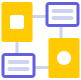
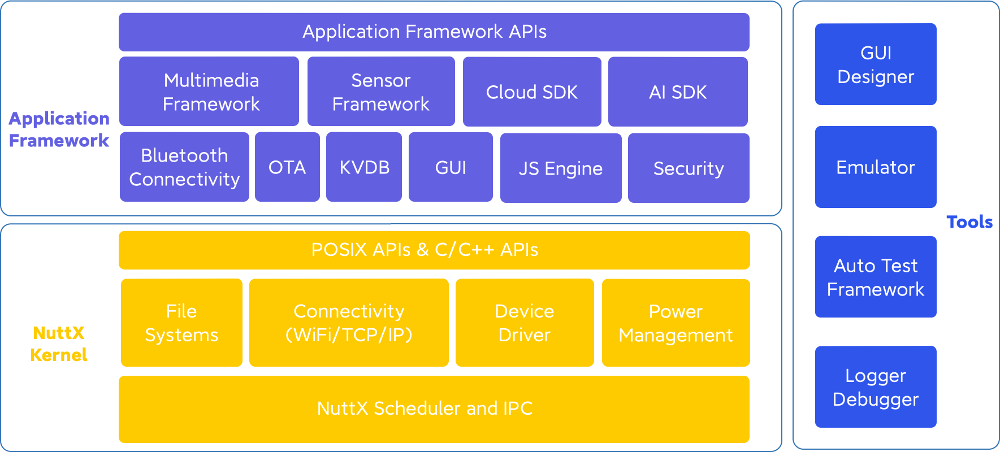

为什么要使用Xiaomi Vela
提升产品性价比
Xiaomi Vela对系统资源的要求
远小于Linux，但是可以提供和Linux系统相近的功能和性能，可以
被看作很多低端Linux系统的替代方案，切换到Xiaomi Vela以后，可
以降低硬件成本，提升产品整体的性价比。
功能高度可裁剪
可以支持系统资源使用跨度极大的各种产品形态，开发者可根据实际需求对系统进行定制，Xiaomi Vela提供基于Kconfig的配置方式，组件内部功能都支持配置。
代码易复用
由于小米Vela对POSIX接口的兼容，Linux平台上现有的开源库和组件都可以很方便的移植到Xiaomi Vela上，另外由于软件平台对硬件平台作出了隔离和统一，因此厂商的上层应用代码在移植到不同硬件平台时也可以更好的复用。
功能完整度高
NuttX本身提供了丰富的OS组件，Vela也会提供尽可能完整的应用框架中间件，所以应用开发者可以利用我们丰富的OS组件和应用框架，快速的完成系统的定制和应用的开发，减少开发成本，让产品更快的投放市场。
欢迎加入Xiaomi Vela Preview计划
上游厂商
上游芯片厂商可以与Vela团队深度合作，软硬协同优化，形成物联网时代的Wintel联盟，共同繁荣IoT生态。
下游厂商
下游设备厂商可以获得高性能、高集成度、高性价比的软硬件方案，厂商可以更多 聚焦在自身的业务逻辑上，为用户打造出更好的产品和体验。
借助Xiaomi Vela，上下游厂商可以更容易融入小米IoT生态，享受小米生态带来的红利，合作共赢，共同发展。
2021年1月开始，小米将开启Xiaomi Vela Preview计划，感兴趣的小伙伴们可以发送邮件联系我们。
联系我们：miot-vela@xiaomi.com
底层NuttX内核
提供最基本的任务调度、跨进程间通信、文件系统等基础OS功能，同时也 提供简洁高效的设备驱动、轻量级的TCP/IP协议栈和电源管理等组件。

应用框架
分为上下两层，下层是为扩展系统服务而提供的通用应用框架，上层是针对 同的物联网应用而开发的定制应用框架，例如多媒体应用框架和传感应用框架 ，提供Cloud SDK可以方便开发者更快速的接入小米云服务。
开发者工具
除了常见的Logger和Debugger工具，Xiaomi Vela还提供Emula tor工具来帮助开发者提升调试效率，使用Emulator，开发者可以利用PC端丰富 的调试工具和调试信息，降低嵌入式系统开发和调试的难度。
